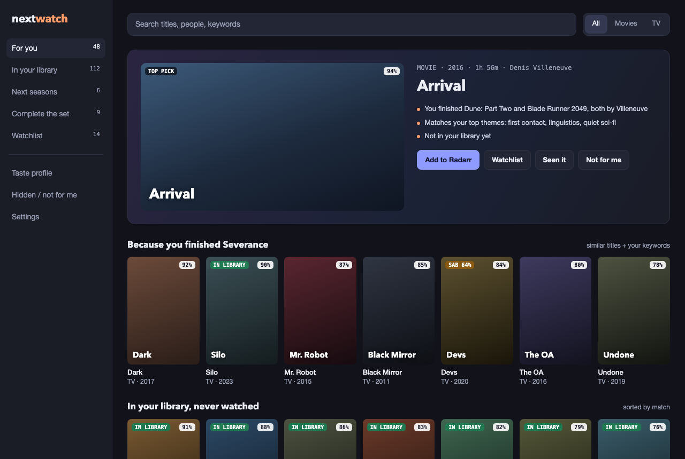

A small web app for your home server. It learns your taste from your own Plex history, looks through your Radarr and Sonarr library, and suggests what to watch or add, with the reasons shown on every pick.

Design mockup with example titles. The app is not built yet.
"You finished Dune: Part Two and Blade Runner 2049." Reasons come from the score itself, so they are never made up.
Uses Plex play counts, completion, ratings and recency from day one. No scrobbling service and no account elsewhere.
Rows for unwatched titles in your library, shows with a next season, and films missing from a collection you started.
Add to Radarr or Sonarr with your quality profile and folder, search starts at once, and download progress shows on the card.
Hide a title, mark it seen, or thumbs up. Feedback changes the next scores, and a taste profile page shows what it learned.
One container, one SQLite file, no cloud service. Reach it at home or over Tailscale. Runs in under 256 MB of RAM.
| Step | What happens |
|---|---|
| Sync | Plex library, watch history and ratings. Radarr and Sonarr libraries and queues. TMDb metadata, keywords, cast and similar titles. |
| Profile | Each watched title gets a weight from completion, rating and recency. Features such as genres, keywords, directors and cast are summed into a taste profile. |
| Score | Candidates from TMDb, plus unwatched titles you own, are scored on taste match, how many of your favourites point to them, quality and freshness, then re-ranked for variety. |
| Browse | Rows such as For you, Because you finished X, In your library, Next seasons, Complete the set and Directors you binge. |
| Add | One click sends the title to Radarr or Sonarr and starts the search through your existing downloader. |
browser (home network or Tailscale) | nextwatch container :8791 FastAPI + htmx + SQLite |-- Plex library, history, ratings (read) |-- Radarr movies, queue; add + search (read, write) |-- Sonarr series, queue; add + search (read, write) |-- SABnzbd queue summary (read) `-- TMDb metadata, keywords, similar (read)
Nextwatch never talks to your indexer or usenet provider. Radarr and Sonarr already own that.
| Tool | Good at | Gap Nextwatch fills |
|---|---|---|
| Diskovarr | Multi-user request portal with recommendations | Needs Tautulli history to learn; no next-seasons or collection-gap rows |
| SuggestArr | Auto-requests similar titles | Acts for you rather than letting you browse and choose |
| Shortlist, Curatarr | Per-user rows inside Plex | No separate browsing page with reasons |
| Trakt | Tracking and scrobbling | Focus is logging, not library-aware picks |
Nextwatch is in design. The mockup, architecture and a 25-task build plan are done. The build runs as a loop of small tasks handled by cheaper models, each checked by an automated test gate, with a person needed only at a few checkpoints. Version 1 is single-user, with no AI model. A hook for a Claude Haiku provider is designed in for later.